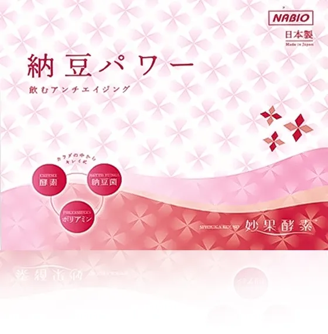

ナビオの製品は
世界の人々の健康に役立っています。
株式会社ナビオは、日本の伝統的な健康食品、納豆のすごさをそのまま生かしたサプリ原料の製造会社です。
納豆には、ナットウキナーゼをはじめ、健康に役立つ成分が多く含まれています。
納豆の健康成分を凝縮した原料の製造は、製品の約8割が海外に輸出され、世界中で多くの人々に愛用されています。

粉末納豆
5つの成分をバランスよく配合した製品

粉末納豆
5つの成分をバランスよく配合した製品
ナトフェミン
血流をサポートする成分を配合した製品

妙果酵素
美容と健康をサポートする植物酵素製品
Company会社概要
長年にわたる
納豆菌の研究成果を
製品化。
株式会社ナビオは納豆の自然の力を活かした製品の開発・販売に取り組んでおります。 中国をはじめ、アジア諸国から世界市場へお届けしています。
View Moreナビオ製品の特長
-
ナビオの製品に含まれる納豆菌は休眠状態の納豆菌です(芽胞菌といいます)。休眠状態の納豆菌は100℃の熱でも、pH1の強酸でも死滅しません。
-
ナビオの製品は、1グラムに数百億個の納豆菌が含まれています。世界の人口数よりも多い数です。
-
大豆を納豆菌発酵させる点では、食品の納豆と同じです。ただ、納豆菌数を最大化する特殊な技術で製造されています。